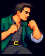
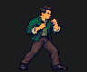
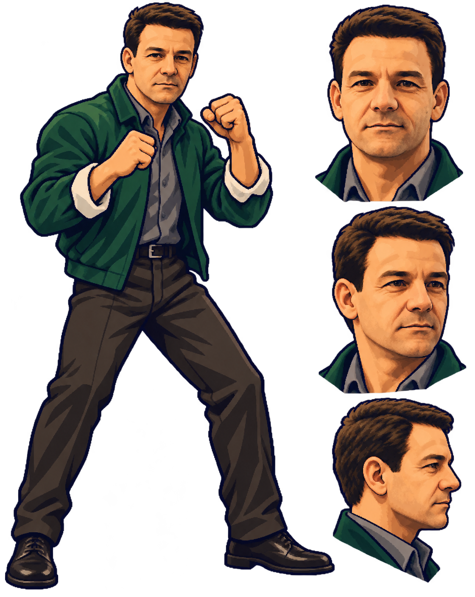
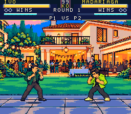
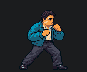
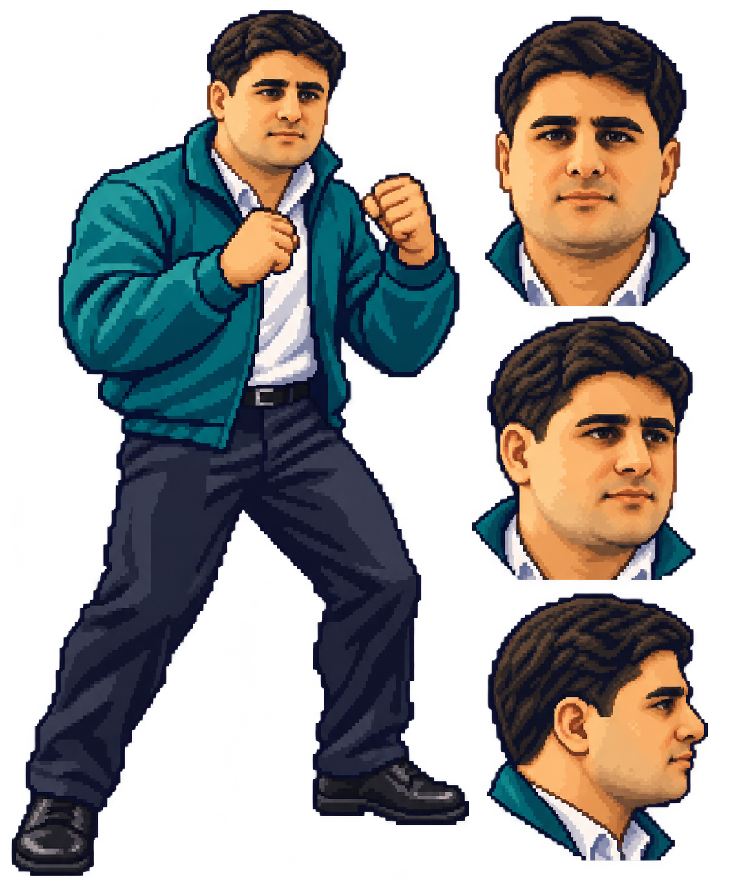
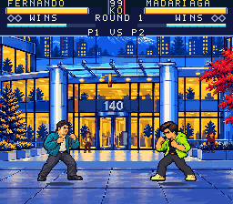
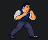
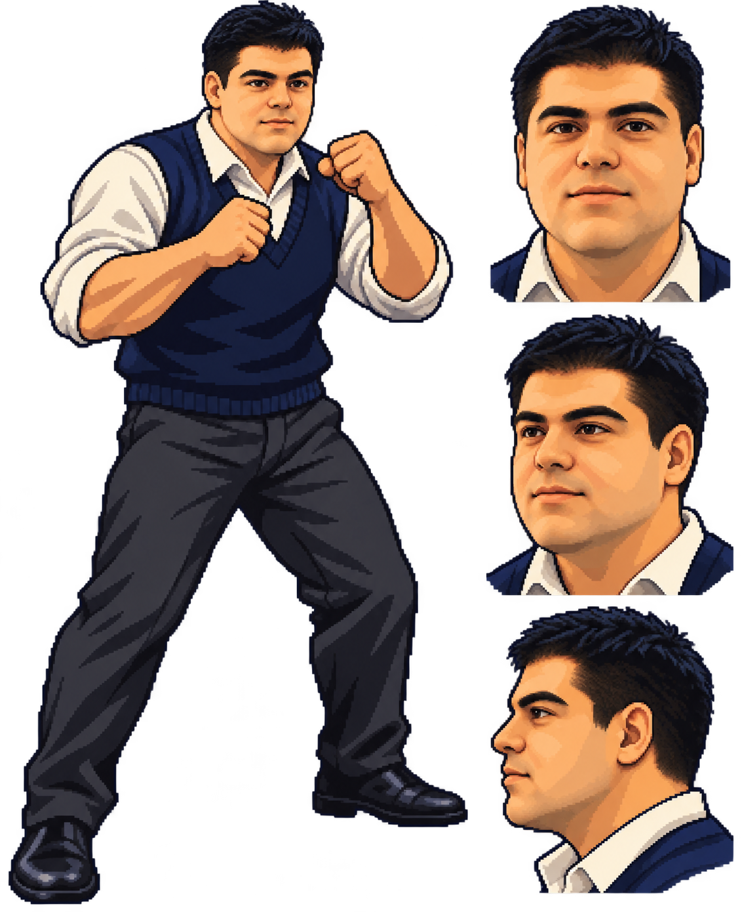
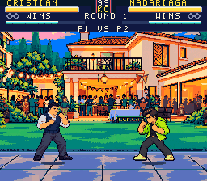

Ivo




Full model and actual gameplay


Photo-based faces and complete bodies across all 64 poses. The portraits and walk cycles below use the actual native pixels; the GIF timing is an inspection aid.













